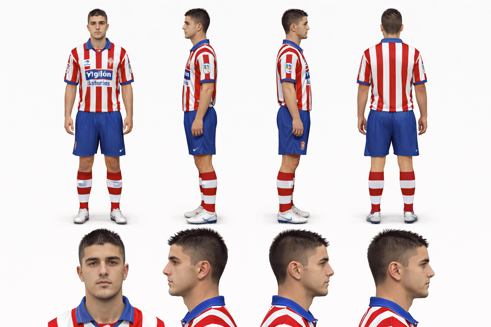
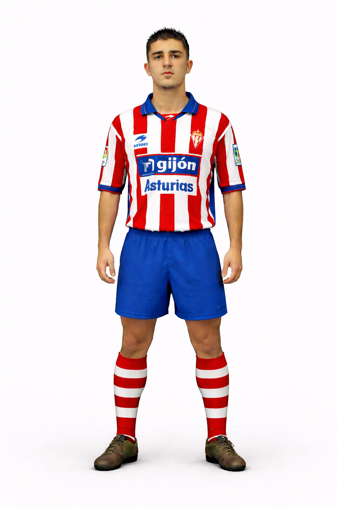

David Villa
Guión
"Llegué al primer equipo del Real Sporting de Gijón siendo todavía un chaval que soñaba con jugar al fútbol profesional. Para mí era algo muy especial, porque Asturias era mi casa y defender esa camiseta significaba representar a mi gente.
Recuerdo perfectamente mis primeros días entrenando con los mayores: todo era más rápido, más intenso, pero también era una oportunidad enorme para demostrar que podí0a estar ahí. Debuté con el primer equipo en la temporada 2001-2002. Al principio no fue fácil. Era joven y tenía que ganarme cada minuto en el campo. Pero poco a poco fui encontrando mi sitio.
Cada partido en El Molinón era una mezcla de nervios y orgullo. Escuchar a la afición animar desde la grada me daba una energía increíble. Sabía que tenía que aprovechar cada oportunidad. En mi primera temporada logré marcar algunos goles importantes. Cada gol con el Sporting lo celebraba con una emoción especial, porque sentía que estaba cumpliendo un sueño que llevaba persiguiendo desde niño.
Aquellos momentos me ayudaron a crecer como jugador y también como persona. La temporada siguiente fue aún más importante para mí. Empecé a tener más protagonismo y pude demostrar mejor mis cualidades como delantero. Me sentía cada vez más cómodo en el campo, entendiendo mejor el juego y confiando en mis posibilidades. Marcar goles y ayudar al equipo era lo único que tenía en la cabeza.
El Sporting fue el lugar donde realmente empezó mi carrera profesional. Allí aprendí lo que significa trabajar duro, luchar cada balón y no rendirse nunca. Los compañeros, los entrenadores y la afición fueron fundamentales en mi crecimiento. Cuando llegué el momento de salir hacia nuevos retos, sabía que llevaba conmigo todo lo que había aprendido en Gijón. El Sporting siempre será una parte muy importante de mi historia, porque fue el club que me dio la oportunidad de empezar a construir el camino que después me llevaría a muchos otros lugares del fútbol."
Hoja de referencia

Personaje
